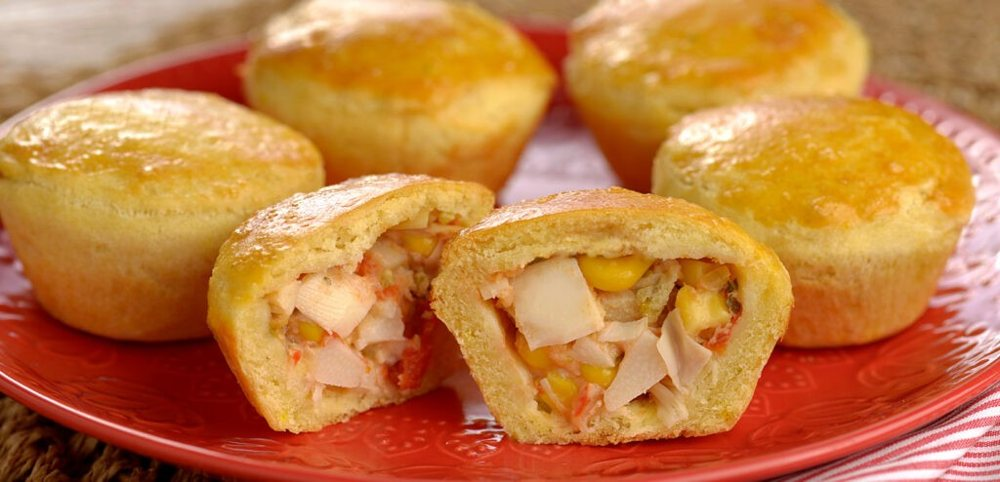

Salgados · Petiscos
Empadinha de palmito

Ingredientes
- 3 ½ xícaras de farinha de trigo
- Sal a gosto
- 1 ¼ xícara de manteiga
- 1 ovo e 1 gema
- 1 cebola picada
- 4 colheres (sopa) de manteiga
- 1 tomate
- ½ kg de palmito
- 1 colher (sopa) de farinha de trigo
- 1 xícara de leite
- 2 gemas
- Sal e pimenta-do-reino a gosto
- 2 colheres (sopa) de salsa e cebolinha verde picadas
Modo de preparo
- Peneire a farinha e o sal sobre uma superfície de trabalho, formando um monte. Faça um buraco no meio do monte e coloque a manteiga, o ovo e 1 gema. Misture com a ponta dos dedos, sem trabalhar muito a massa.
- Faça uma bola com a massa, embrulhe em filme plástico e deixe descansar por 1 hora.
- Enquanto isso, prepare o recheio: numa panela, frite a cebola na manteiga até ficar transparente. Junte o tomate sem pele e sem sementes, picado, misture bem e cozinhe por 5 minutos. Junte o palmito escorrido e picado. Cozinhe por mais 10 minutos.
- Numa tigela, misture a farinha com o leite e despeje na panela, mexendo para não empelotar. Cozinhe até engrossar e junte 1 gema. Misture e retire do fogo.
- Tempere a gosto. Junte a salsa e a cebolinha. Misture bem com o palmito e deixe esfriar.
- Preaqueça o forno em temperatura média (180 °C). Unte cerca de 24 forminhas de empada e forre com a massa. Coloque um pouco de recheio em cada forminha e cubra com uma rodela de massa. Pincele com a gema restante e asse no forno preaquecido até dourar. Deixe esfriar e congele.
Observação
Você pode congelar a massa de empada sem o recheio: siga a receita apenas até o passo 2. Com essa mesma massa você pode fazer barquetes, empadão etc. e colocar o recheio de sua preferência. Congelamento: leve as forminhas ao freezer, sem cobrir, até as empadas ficarem duras; desenforme e coloque-as, lado a lado, em uma bandeja de papel-alumínio, cubra com filme plástico, etiquete e congele. Descongelamento: leve diretamente do freezer ao forno para aquecer por cerca de 15 minutos.